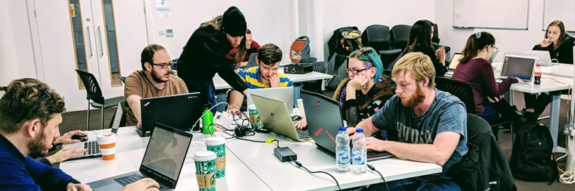

More Info
Building sites and applications that are secure is paramount. In this session we'll be looking at how to recognise vulnerabilities in existing developments, how these could be exploited and, of course, how to fix and guard against attacks.
It is our duty to build with security in mind. If what we build is not safe and secure, critical business relationships can be compromised. Insecurity allows for the spread and escalation of malware, attacks on other websites, and even attacks against national targets and infrastructure.
Outcomes
At the end of this training you will be able to:
- Recognise certain vulnerabilities of a web application, including those frequently featured in the OWASP top 10
- Test for security issues and understand how to prevent them
Learner Requirements
Understanding of PHP, HTML and JS
Outline
An intro to web security and common vulnerabilities followed by practical activities. We'll be exploring applications, discovering and exploiting their vulnerabilities.We'll then be discussing the potential impacts and what steps need to be taken to prevent these security flaws.